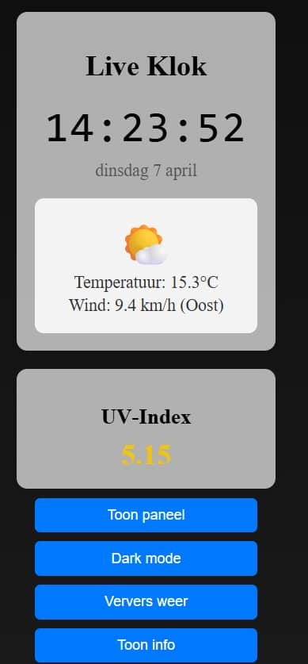

Case — UI-componenten · 2026
Portfolio Widgets
Een set interactieve UI-widgets die laat zien hoe design en data samenkomen: een live klok, weer-API, UV-index en een schakelaar tussen licht en donker thema.

Wat er in zit
- Live klok en datum, opgebouwd zonder externe libraries
- Weersverwachting via een API, met nette fallback als de verbinding hapert
- UV-index die kleur en advies aanpast aan de waarde
- Volledige dark mode met dezelfde componenten
Licht en donker, één systeem
Dezelfde componenten werken in beide thema's: kleur, contrast en schaduw komen uit één set design-tokens. Daardoor blijft de interface consistent, ongeacht de voorkeur van de bezoeker.

Resultaat
Eén set componenten die in beide thema's klopt: dezelfde tokens, dezelfde contrastverhoudingen en geen dubbele CSS. Een nieuw onderdeel toevoegen is daardoor een kwestie van regels, niet van opnieuw ontwerpen.
Waarom dit project
Ik gebruik deze widgets als testlab: hier probeer ik nieuwe interacties, animaties en API-koppelingen uit voordat ik ze in klantprojecten verwerk.
Zoiets voor jouw site? →